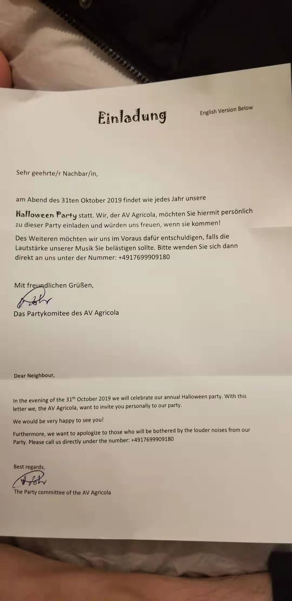

昨天
沐浴着清晨的第一缕阳光，踏上去语言班的青石板路，整个人都充满了喜悦和平和。周五到周日是万圣节假期，而我，从周四下午便能开始放假了。
下午约好了和老王馨去逛街，但王馨房东迟迟未到，就在屋子里看了《神童》。电影是不好看的，只期待能快点出去逛街。
四点过出门，在REWE买了些商品。大部分是王馨的，我实在不知到能买什么，又或许确实没打算买些什么。
逛街一直走到了邮局附近的TEDI，买了老王馨需要的垃圾桶等用品，本打算在路上一起吃两doenner，但送王馨回家路上貌似没有这些东西，也就算了。在王馨家吃了她做的面，虽然听她说，这是她第一次做面，但确实好吃！真不是因为饿了。吃完饭便告辞回家了。
亚琛的夜晚是很安详的，昏黄的霓虹下，涂着花脸的人们，或三五成群蹲在屋檐下吞云吐雾，或在川流不息的街道上匆匆急行。他们或有与我相同的目的——回家。
深夜回家，庆祝万圣节的趴体还没散场，震耳欲聋的激情音乐，从天黑一直持续到天明。虽然很高兴收到邻居的派对邀请，但想想第二天约好和王馨去lousberg，还是拒绝了。

今日
一大早枕着清晨的阳光醒来，洗漱、洗澡吃饭。满怀期待地等着老王馨来家里做午餐，却因为馨说下雨不来了，而取消了今日的计划。心里不免有些失望。该死的Unwetter。
下午，在家煮了REWE买的饺子，并不好吃。。吃过午饭在床上躺了会儿，实在无聊，便出门了。本打算直奔图书馆，又想到老王馨貌似还缺个Waeschestaeder，就顺路去了OBI，结果OBI也关门了。回走的路上，突发奇想，自己迷迷糊糊地走到了lousberg，离家里真的很近。从铁路桥上就能看到耸立的Drehrestaurant。

朝着lousberg方向出发，从一处不起眼的楼梯向上走，一路上没碰到几个人，或是因为今日下雨的缘故吧。
山脚的小屋，在雨后十分安详，在寒冷的雨天，只有他还守着这座小山。
山里的风，似守山人一般，冲着我嘶鸣，欲将我这不速之客驱离。我仿佛没有听见这些警告，一路向上。
雨后的山路，潮湿泥泞，偶然过往的车辆将泛黄的落叶推向两边，于我留下了一方干净的柏油路。沿着山路向上，不到二十分钟，就走到了顶。
首先映入眼帘的自然是旋转餐厅，这座隐藏在深林中的餐厅，别具风味，迎着山风和露水，如警卫一样，矗立守望着亚琛这座小城。
从山顶往下看，能看到整个亚琛。环顾四周，心平淡了许多，这些月的烦恼都不复存在。
这将是我在亚琛的秘密基地。一个亚琛人都知道的地方，只有雨天她才只属于我。
逛了lousberg又去亚琛市中心闲逛，没几家商店开门，但在雨天逛街，亚琛向我展现了他另一种风情，吸引我靠她更近。
不知不觉，走到了德语班一个同学居住附近。很熟悉的地方，曾在这里去过好几次邮件。
傍晚，回家。路中，买了doenner。
感谢亚琛，在孤独中陪伴我；谢谢你，带走我的烦恼。让我就算再苦，也能坚持下去。。